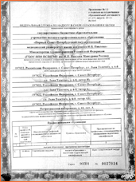

22-12-2015
Сложные случаи эстетической хирургии молочной железы >>
01-03-2014 - 10-03-2014
Обучающий Курс известнейшего пластического хирурга международного уровня Брайана Мендельсона >>
01-03-2014 - 10-03-2014
Седьмой интенсивный диссекционный обучающий курс по инъекционным методикам омоложения лица" под руководством заведующей кафедрой Пластической хирургии >>
Учебная часть
Обучение по пластической хирургии и профессиональная переподготовка
В современном обществе огромное внимание уделяется качеству образования в целом и качеству медицинского образования в частности. Важно не просто получить диплом, важно стать первоклассным пластическим хирургом. Хочется отметить, что обучение на кафедре пластической хирургии СПбГМУ им. акад. И. П. Павлова соответствует высоким требованиям, предъявляемым к обучению пластической хирургии и профессиональной переподготовке.
Все преподаватели кафедры являются членами Российского Общества Пластических, Эстетических и Реконструктивных хирургов, а также членами многих международных обществ. Понимая также, что качественное образование невозможно без обмена опытом и интерактивного общения наша кафедра проводит множество различных симпозиумов, конференций, мастер классов. Помимо этого большое внимание мы уделяем подготовке молодых специалистов, работе со студентами нашего ВУЗа, поэтому в этом учебном году мы открываем работу студенческого научного общества (СНО). Основной задачей этого общества мы видим знакомство студентов-медиков со специальностью пластическая хирургия и помощь в их профессиональной ориентации.
К нам на кафедру приходит много вопросов: «Как выучиться на пластического хирурга?», «Что делать, чтобы стать пластическим хирургом?», «Сколько времени надо учиться на пластического хирурга?». Такие вопросы понятны. Наша специальность новая и еще не до конца определены стандарты обучения. Но очевидно, что пластическая хирургия это специальность, находящаяся на стыке множества других специальностей. Микрохирургия и хирургия кисти, челюстно-лицевая хирургия и общая хирургия, онкология и эстетическая хирургия, термические повреждения вот только приблизительный перечень того, что должен знать пластический хирург. Поэтому обучение специальности пластическая хирургия должно быть комплексным, и многоступенчатым. Именно этого постулата и придерживается наша кафедра.
Здесь Вы можете ознакомиться с перечнем циклов, проводимых кафедрой пластической хирургии >>